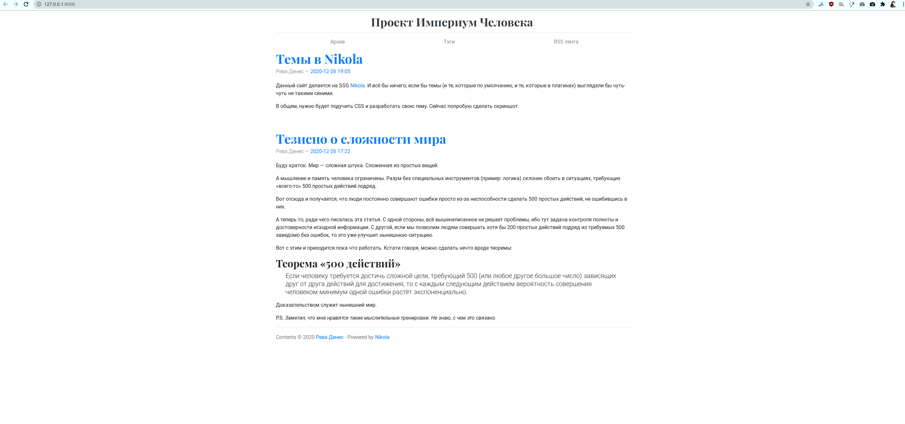

Темы в Nikola
Данный сайт делается на SSG Nikola. И всё бы ничего, если бы темы (и те, которые по умолчанию, и те, которые в плагинах) выглядели бы чуть-чуть не такими синими.
В общем, нужно будет подучить CSS и разработать свою тему. Сейчас попробую сделать скриншот.
Скорее всего, возьму что-то наподобие Bootstrap4 за основу. Он выглядит чуть-чуть лучше, чем bootblog4, который идёт по умолчанию.

Или я со временем найду другой статический генератор (Next.js?), благо исходники сохраняются.